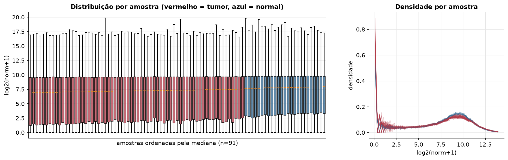
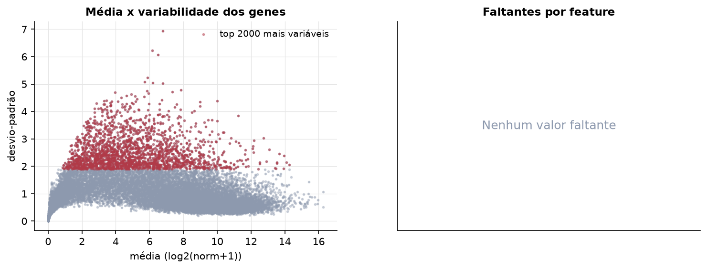
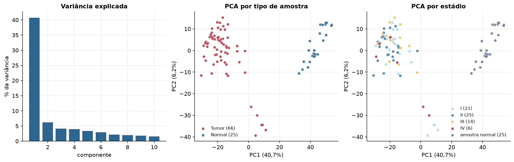
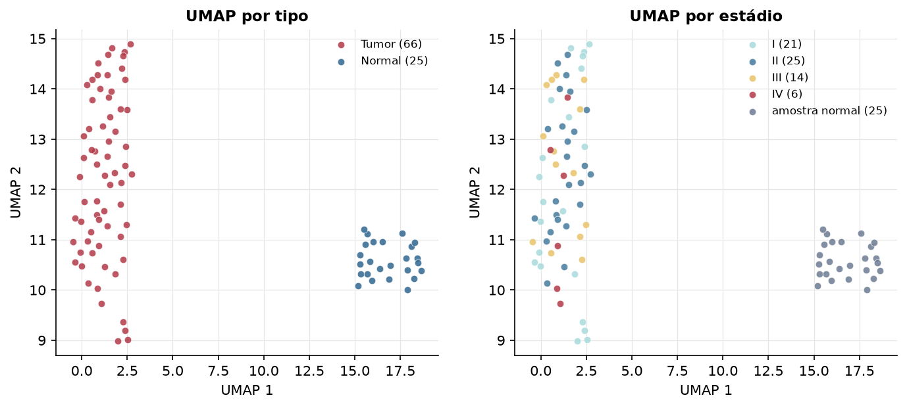
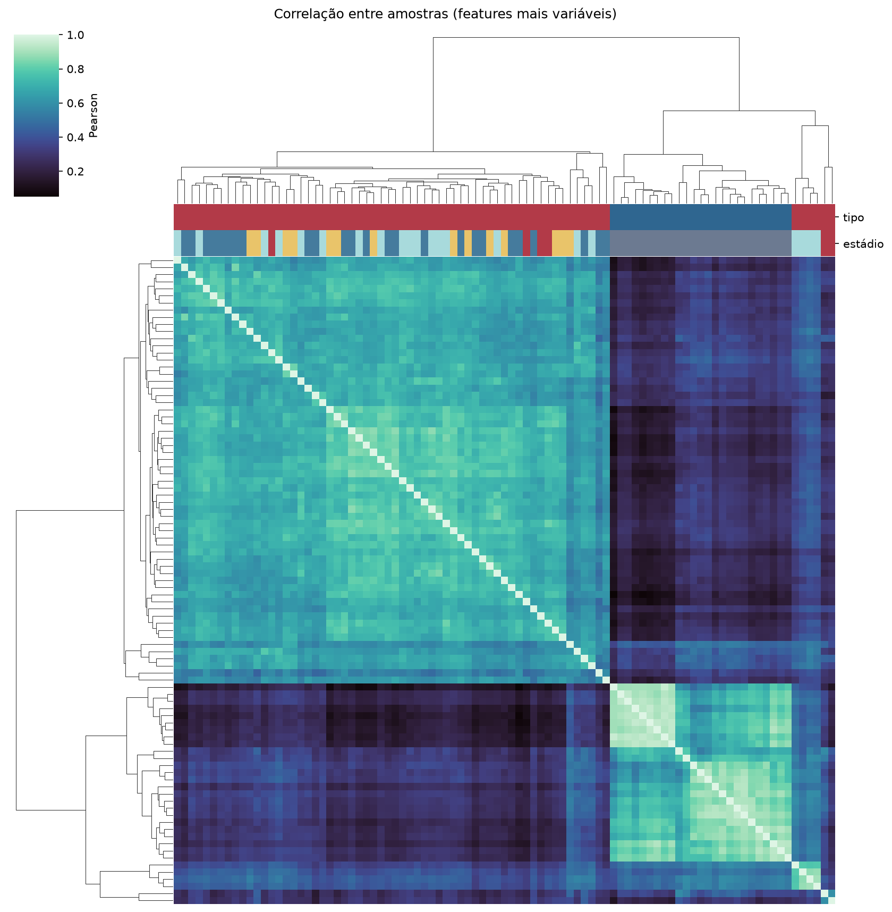
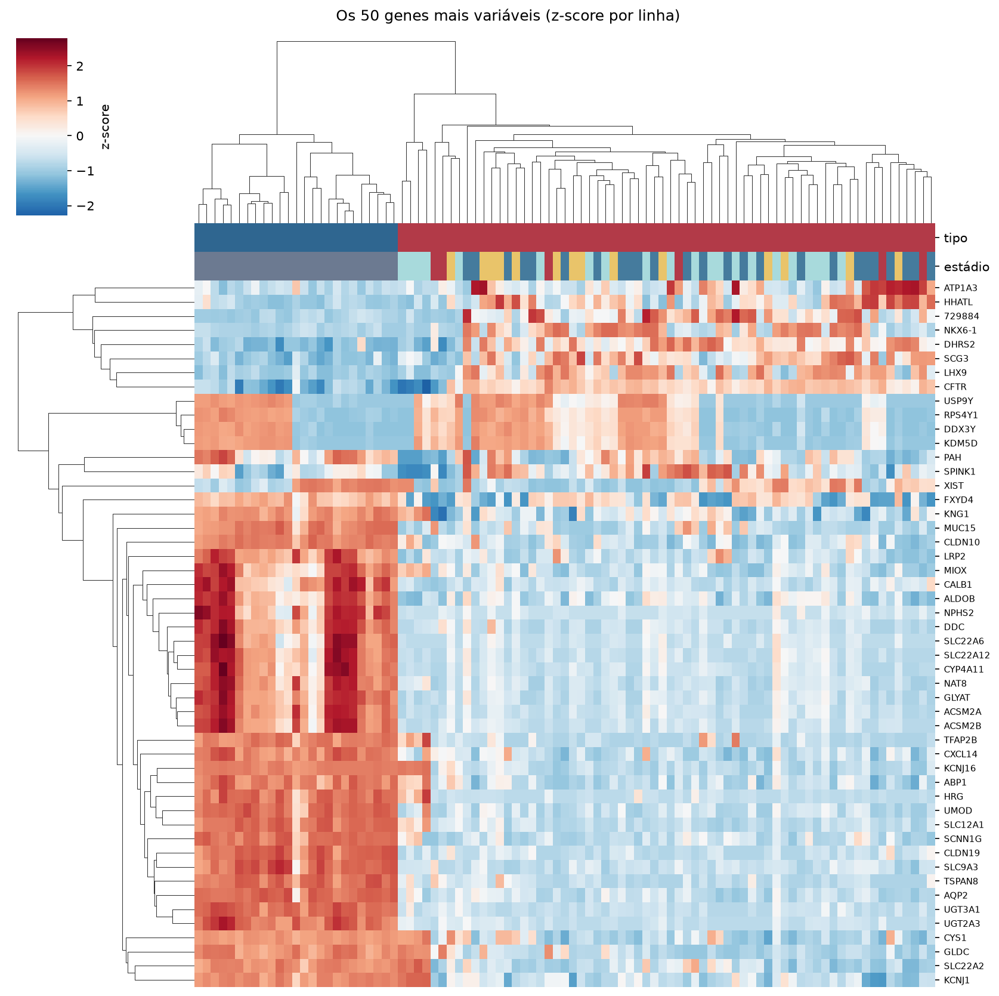
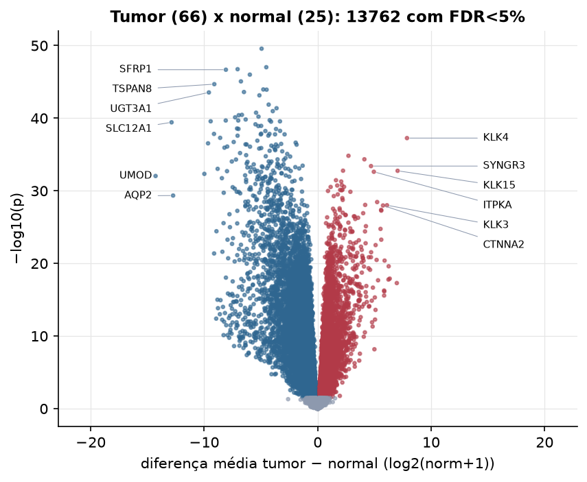
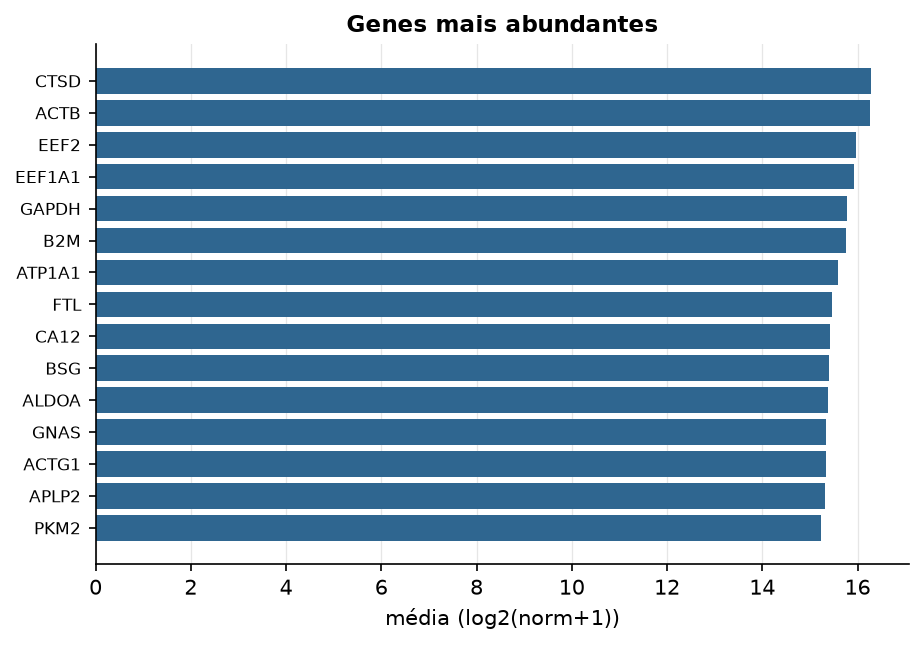

KICH · RNA-seq (PanCanAtlas)
Illumina HiSeq, RSEM normalizado e corrigido por lote (EB++), log2(x+1) · gerado em 21/10/2026 22:16
20.531genes
66amostras tumorais
25amostras normais
0,0%valores faltantes
Fonte: PanCanAtlas EB++ via API do Xena
Estes valores já vêm normalizados e com correção de lote entre plataformas e centros. Servem bem para modelos gaussianos ou redes neurais; para um modelo de contagem use as contagens brutas do GDC.
Principais resultados
- 20.531 genes medidos em 91 amostras (66 tumorais e 25 normais); 0,0% dos valores estão faltando.
- Os dois primeiros componentes principais explicam 40,7% e 6,2% da variância das features mais variáveis.
- Correlação mediana entre amostras: 0,55.
- Tumor x normal: 13762 genes diferentes com FDR < 5% (4934 maiores no tumor, 8828 maiores no normal; 25 pacientes têm o par tumor-normal).
- Mais aumentados no tumor: KLK4, PHKA1, HAGHL, SYNGR3, SPIRE1, KLK15, ITPKA, RALA.
- Mais reduzidos no tumor: TEKT2, WDR78, FGFR3, SFRP1, GPRIN2, LOC723809, TSPAN8, CXorf57.
- Associações clínicas com p < 0,05 nos componentes principais: PC3 com estádio (p=0.003); PC2 com sobrevida (p=0.008); PC3 com sobrevida (p=0.032).
- Em mediana, 79,5% dos genes têm expressão acima de log2(norm+1)=1 em cada amostra.
Distribuição dos valores


Estrutura das amostras




Tumor x normal

Features mais diferentes entre tumor e normal
| diferenca_tumor_menos_normal | t | p | fdr | |
|---|---|---|---|---|
| TEKT2 | -4.944 | -34.198 | 2.67e-50 | 5.32e-46 |
| WDR78 | -4.53 | -29.769 | 9.53e-48 | 9.49e-44 |
| FGFR3 | -7.057 | -29.842 | 1.78e-47 | 1.05e-43 |
| SFRP1 | -8.09 | -29.533 | 2.12e-47 | 1.05e-43 |
| GPRIN2 | -5.978 | -29.041 | 1e-46 | 3.99e-43 |
| LOC723809 | -6.764 | -36.436 | 8.51e-46 | 2.83e-42 |
| TSPAN8 | -9.111 | -31.975 | 2.06e-45 | 5.86e-42 |
| CXorf57 | -4.792 | -27.032 | 1.1e-44 | 2.62e-41 |
| C10orf79 | -4.502 | -27.626 | 1.18e-44 | 2.62e-41 |
| FOXJ1 | -6.497 | -36.072 | 2.49e-44 | 4.95e-41 |
| UGT3A1 | -9.59 | -46.831 | 2.85e-44 | 5.15e-41 |
| EFHC2 | -5.137 | -26.407 | 7.14e-44 | 1.19e-40 |
| C2orf62 | -4.321 | -26.245 | 1.35e-42 | 2.07e-39 |
| LRRC48 | -3.625 | -27.379 | 4.23e-42 | 6.02e-39 |
| CASC1 | -3.958 | -24.768 | 1.07e-41 | 1.42e-38 |
| C8orf84 | -5.43 | -29.153 | 1.75e-41 | 2.18e-38 |
| VTCN1 | -6.676 | -25.09 | 3.46e-41 | 4.06e-38 |
| C21orf62 | -6.957 | -25.775 | 3.91e-41 | 4.33e-38 |
| FIGNL2 | -5.217 | -29.344 | 6.14e-41 | 6.44e-38 |
| EPHA7 | -7.275 | -27.295 | 7.58e-41 | 7.56e-38 |
| ABCB1 | -6.347 | -24.066 | 1.51e-40 | 1.43e-37 |
| CCDC103 | -4.229 | -24.503 | 1.89e-40 | 1.71e-37 |
| HS6ST2 | -8.102 | -26.323 | 2.09e-40 | 1.73e-37 |
| RASAL1 | -7.002 | -23.836 | 2.09e-40 | 1.73e-37 |
| SCNN1G | -9.431 | -26.942 | 2.67e-40 | 2.09e-37 |
| ZNF185 | -3.324 | -24.042 | 2.72e-40 | 2.09e-37 |
| IGFBP2 | -4.109 | -25.031 | 2.98e-40 | 2.2e-37 |
| SLC12A1 | -12.877 | -28.765 | 3.69e-40 | 2.63e-37 |
| MAPK15 | -5.483 | -30.861 | 6.96e-40 | 4.79e-37 |
| DZIP1 | -4.981 | -27.011 | 1.14e-39 | 7.59e-37 |
Associação com variáveis clínicas
p-valores da associação dos três primeiros componentes principais (só tumores) com estádio (Kruskal-Wallis), sexo (Mann-Whitney), idade (Spearman) e sobrevida global (Cox univariado).
| estádio (Kruskal) | sexo (Mann-Whitney) | idade (Spearman) | sobrevida OS (Cox) | |
|---|---|---|---|---|
| PC1 (15,0%) | 0.1 | 0.192 | 0.058 | 0.866 |
| PC2 (7,3%) | 0.105 | 0.235 | 0.486 | 0.008 |
| PC3 (5,9%) | 0.003 | 1 | 0.948 | 0.032 |
Mais abundantes
